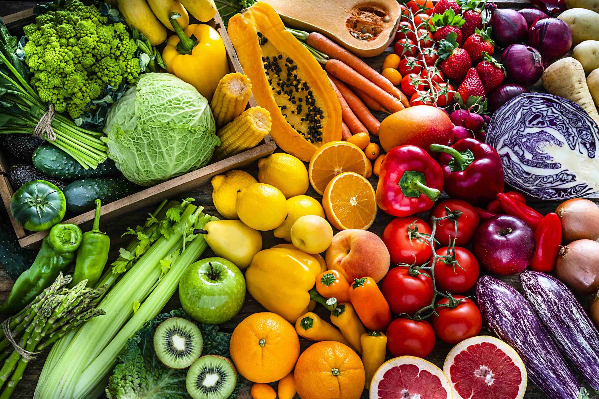
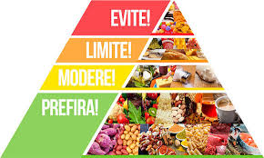
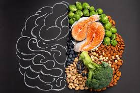

Nutrição

Nutrição é a ciência que estuda as relações entre os
alimentos e nutrientes ingeridos pelo ser humano e possíveis estados de
saúde e doença. O trabalho do nutricionista reside, majoritariamente, na
orientação de uma alimentação adequada, a fim de manter o organismo em
equilíbrio e saudável.
Conheça Alguns Princípios Básicos da Nutrição:
- O corpo humano requer sete tipos principais de nutrientes;
-
Nem todos os nutrientes fornecem energia, mas ainda são importantes,
como água e fibra;
-
Os micronutrientes são importantes, mas necessários em quantidades
menores;
-
As vitaminas são compostos orgânicos essenciais que o corpo humano não
consegue sintetizar.


| Chocolate |
| Nome |
Gramas |
Calorias |
| Sonho de valsa |
57g |
568 cal |
| Lacta |
25g |
134 cal |
| Nestlé ao leite |
30g |
160 cal |
| Talento castanha |
25g |
145 cal |
| KitKat |
41,5g |
218 cal |
| Ouro Branco |
20g |
106 cal |
| Ferrero Rocher |
12,5g |
73 cal |